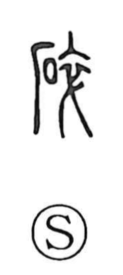

砕

Uncategorized
Kun: kudaku, kudakeru | On: sai
to break ・ to smash ・ to crush
Explanation
Originally written 碎, this is a phono-semantic character: the stone element supplies the idea, while 卒 serves as the sound. Shirakawa explains 卒 as the overlapping, tied neckband of a corpse’s garment, fastened to keep the soul from slipping away—a vivid ritual image that here functions chiefly as a phonetic. Its sound evoked the crunching of stone, and so it was applied onomatopoetically to crushing rock. From that concrete sense of grinding stone, the meaning broadened to the general ‘break, smash’ and the intransitive ‘be broken.’ Related members of the same phonetic series, such as 淬 and 焠, likewise use 卒 and share the on-reading sai.